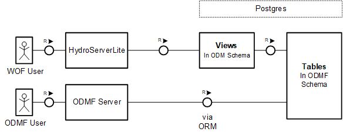

What is ODMF¶
Who can use it etc.pp.
TBD by Philipp
Features of ODMF¶
- Upload measurement data for future use e.g. analyze and download
- Data is persisted in an Postgres database in specific schema structure
- Analyze data via the platform, export it in CSV format and plot an image
- Organization of different user roles within the online system
- Augment measurement data gathered from the work in the field via meta data, such as logs and pictures
- Integration of data into Google Maps interactive UI
Also it can be integrated into the CUAHSI network and used with the tools provided by the CUAHSI organization. For example to inspect or download data via the Data.CUAHSI page.
Development¶
Further explanation of the code structure and the software components can be found in the development chapter. (Architecture/ Components) Link to Development Mentales Gerüst (optional)
- Schwingbach FMC (Overall)

CUAHSI WaterOneFlow Interface¶
To access the Schwingbach valley data with other software than the ODMF server, a special interface is used. This interface is called WaterOneFlow interface. It makes public datasets accessible in the so called HIS Central network. All endpoints in this network can be accessed and utilized by tools, provided by the CUAHSI organziation. The integration of the WOF interface into the ODMF server system is described in the following chapter.
CUAHSI Tools¶
Two official tools are provided, to request data from a HydroServer. So these tools can also be used to debug the server behaviour.
- HydroDesktop (Windows application)
- data.cuahsi.org (web userinterface)
- Series ids in the workspace view don’t display the series id in the local development database. Instead they are generated by the harvesting process, which collects the meta data from all HydroServer systems.
How does it work¶
The important elements, to understand the interface are the HydroServerLite (a), which implements the WaterOneFlow interface, the PostgreSQL database (b) which fullfills the ODM schema via SQL views and additionally there is the ODMF (c) server, which is mainly used to write data into the database.

- A request is send the HydroServer instance. This request can be one of the methods of the endpoint, e.g.
GetSiteswhich will return all published Site objects. - The middlewares nested PHP methods (see implementation chapter) start to build the XML response, which will fetch data from one or more tables of the database. In the case of the Schwingbach project SQL views instead of SQL tables are used.
- The database then uses the corresponding tables of the respective views to provide the data.
Data writes from the import mechanism from the ODMF server are an ongoing process and can result in an hourly changing data base. For details you can refer to migration or daily jobs.

Implementation¶
Details on this topic are written down in development chapter
Configuration¶
The configuration of the WaterOneFlow interface can be found in the installation chapter.